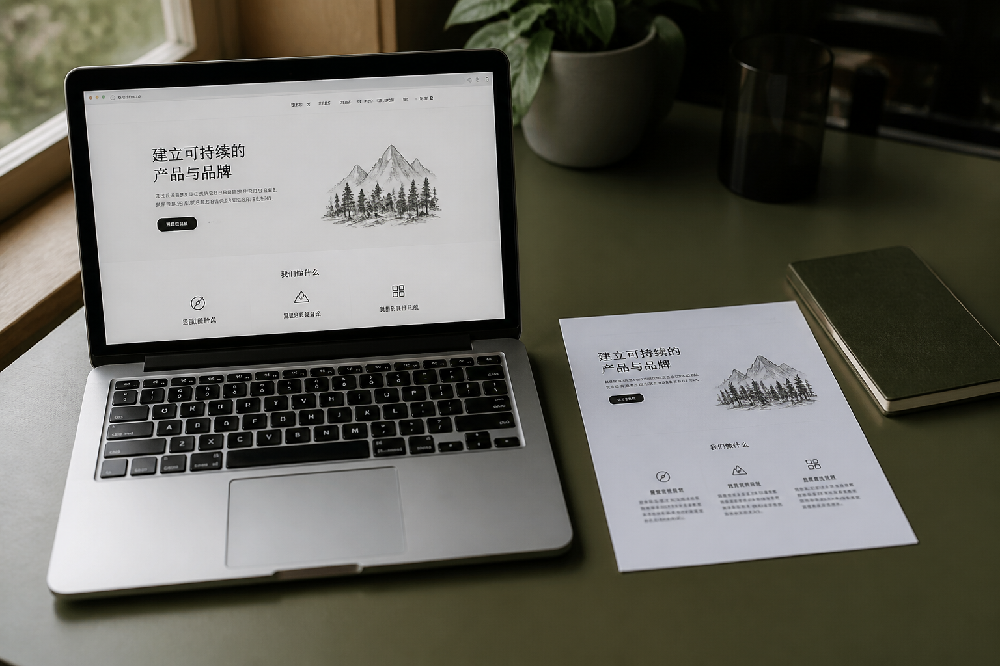

先定「你要哪种东西」
做网页不会被当成写作。答疑不会被扩成一课 PPT。模式选错，后面再努力也对不上。

DeepSeek Harness 是 DeepSeek 开源的智能体运行时。它不只在窗口里说话：模型可以读你选中的文件夹、改文件、跑命令、上网查资料、按 skill 做事。底层用一套叫 Cordis 的插件框架，模型适配、工具、会话、循环本身都是插件，没有一块改不了的内核。
官方仓库给开发者改引擎。你桌面上的图标跑的就是这套引擎。MIT 许可，代码在 github.com/deepseek-ai/deepseek-harness。
网页、表格、改名、定时任务要落在你电脑里。对话框里的「我已经写好了」不是文件。Harness 的工作区就是你选的那一层文件夹。
新工具、新界面、新策略用插件挂上去，用配置叠上去。不必因为缺一个节点就搬到另一家平台，也不必为了加能力把整份源码改穿。
发给模型的内容要能从会话日志还原。刷新页面、隔天再来，不是一段消失的聊天记录。这是产品约定，不是靠记忆力。
三层机制。小白不必会写插件，但值得知道为什么它和聊天窗不是同一种东西。
不宣称比某家模型更聪明。差在：东西写在哪、谁说了算、关掉以后还在不在。
ChatGPT、通义、网页对话
扣子、Coze、Dify
LangChain、Agents SDK、Cursor、Claude Code
这一版 Easy 只是套在引擎外面的小白外壳：八张中文模式卡片、发送时带上做法。引擎仍是官方 DeepSeek Harness。
左边四步挡住常见坏结果。右边是同一件事的两种纸样：堆满装饰的模板，和能发出去的一页。
做网页不会被当成写作。答疑不会被扩成一课 PPT。模式选错，后面再努力也对不上。
标签就是这个模式最常用的做法。点掉这次不带。学习答疑默认只带「讲明白」，避免短问被教成一堂课。
html、文稿、表格、简报要能打开。助手说「做好了」不算数。网页做完会尝试在浏览器里打开。
三句核对：是不是他要的那种、打开后能不能用、有没有多做。不自动钉上，短答不必走这步。
右侧三条杠是示意，不是实验室分数。看「聊天框常见结果」和「这一版要交的」差在哪。